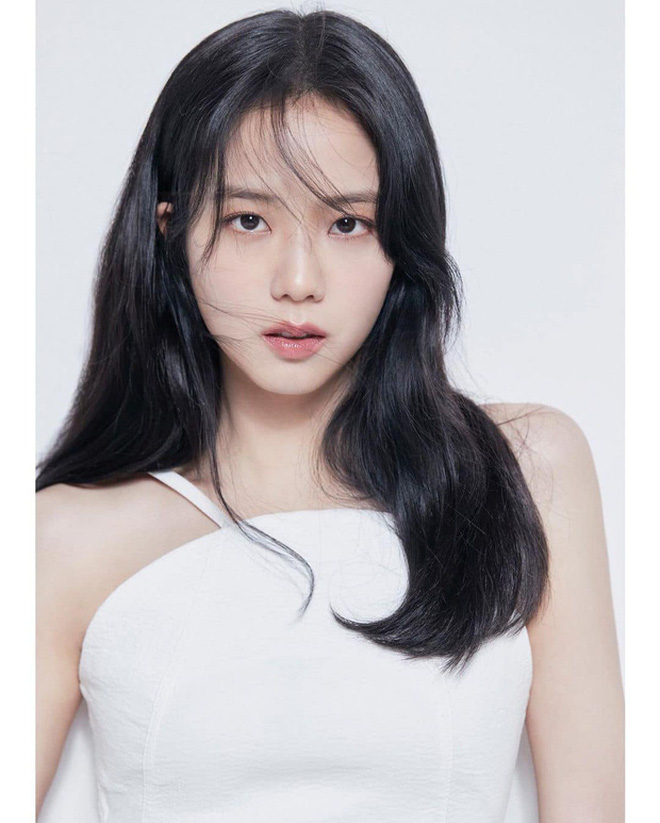
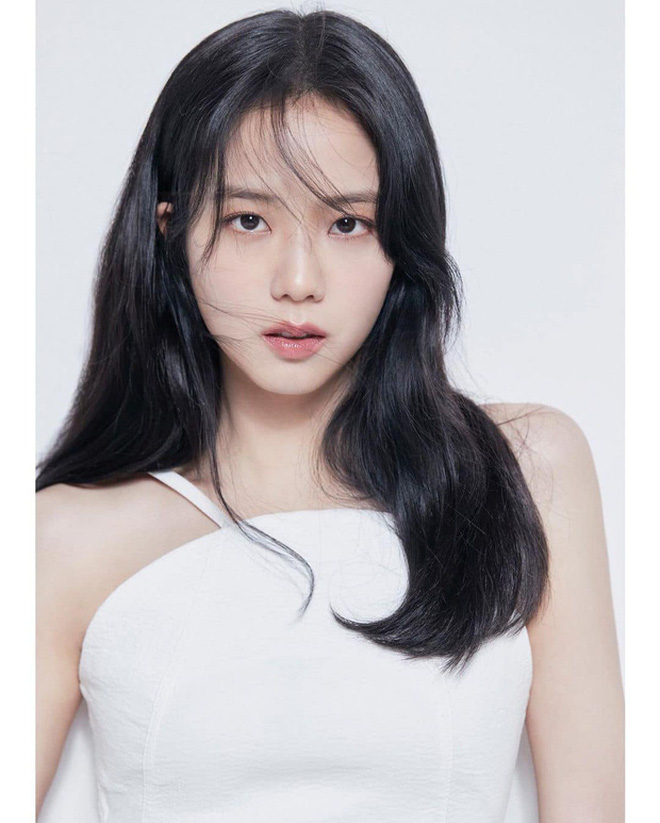
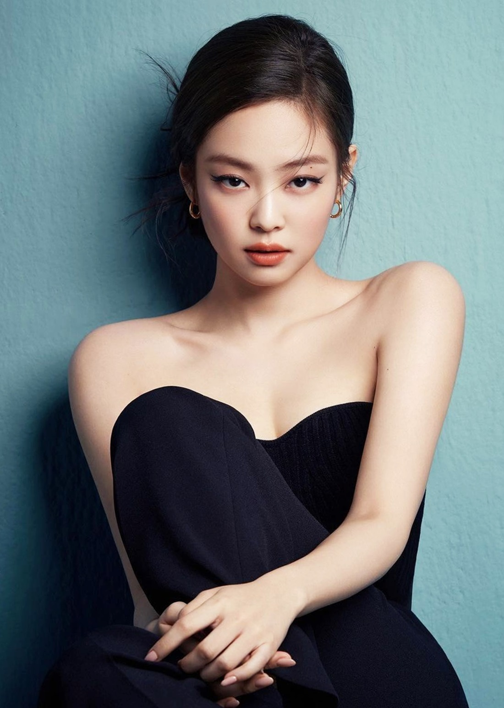
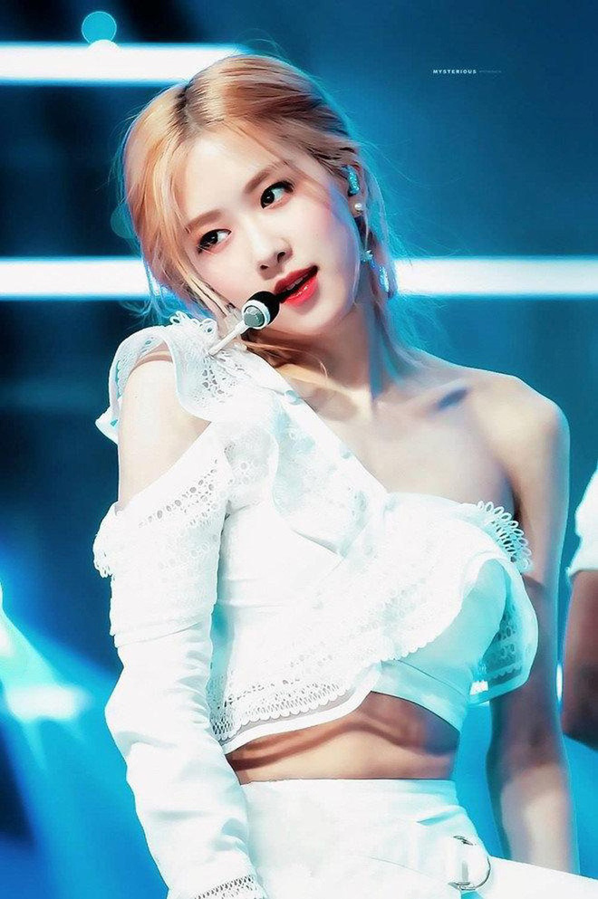
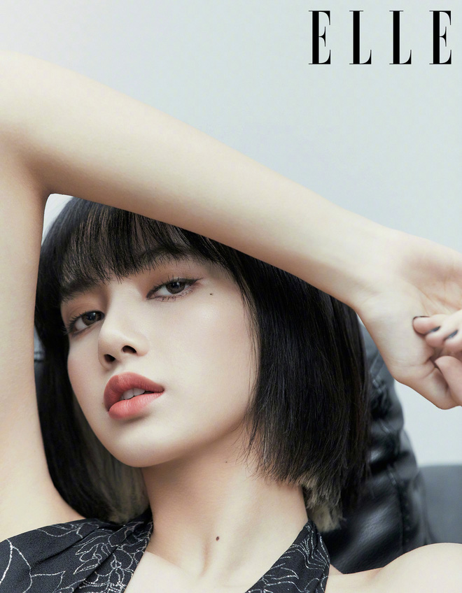
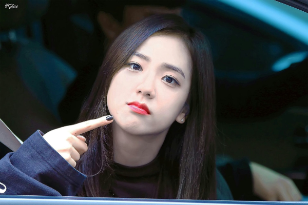
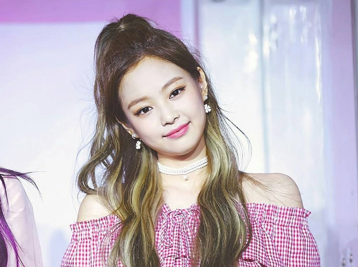
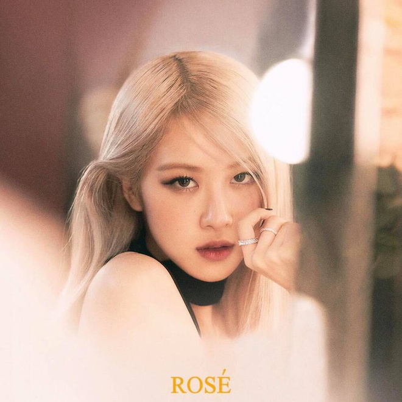
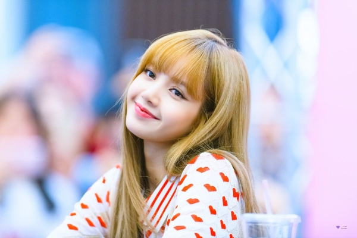

1.Jisoo

- Real name: Kim Ji-soo (김지수)
- Date of birth: January 3, 1995
- Nickname: Chi Choo, Jichu
- Jisoo BlackPink instagram: @sooyaaa__
- Birthplace: Seoul, South Korea
- Position in the group: Vocalist, Visual




Jisoo's real name is Kim Ji-soo (Korean transliteration: )
- Date of birth: January 3, 1995
- Jisoo's height: 1.62 m
Jisoo is a Korean female idol singer, actress, model and MC. Jisoo is a member of the girl group Black Pink . She is considered a new generation female idol of the K-pop music industry, highly appreciated for her singing talent and beauty.
- Family: Has one brother and one sister.
- Career:
Jisoo appeared in Epik High's "Spoiler + Happen Ending" MV and Hi Suhyun's "I'm Different" MV.
Before debuting, she was a model and actress, appearing in many commercials of many brands.
On June 15, YG revealed photos of member Jisoo, the group's oldest sister, who has modeled for various advertising brands and acted in many music videos
On August 8, 2016, she officially debuted with Black Pink with the single Square One consisting of 2 songs "BoomBayah" and "Whistle". She takes on the role of lead vocal and visual of the group. On October 31, 2016, Jisoo and BLACKPINK came back with the single Square Two including 2 songs "Playing With Fire" and "Stay" which achieved many achievements and awards.
On June 22, 2017, she and Black Pink officially released the song "As If It's Your Last" and the MV of the same name. The song quickly became the MV with the most views within 24 hours for a girl group with more than 13 million views.
On June 15, 2018, she returned to Black Pink with the mini album "Square Up", with the title song "Ddu-Ddu Ddu-Ddu". This comeback of the group has broken a series of K-Pop records. Specifically, the MV with the most views in 24 hours in K-Pop and more specifically, ranked 2nd worldwide with more than 30 million views after only 1 day of release. Bring home 11 trophies. Top Billboard hot 100 and a series of other awards.
Jennie's real name is Kim Jennie (Korean transliteration: )
- Date of birth: January 16, 1996
- Jennie's height: 1.63 m
Jennie is fluent in Korean, English and Japanese
- Occupation: As a Korean singer and rapper, she was an international student in New Zealand. Currently a member of the girl group Black Pink.
- Career:
Jennie Kim appeared in G-Dragon 's MV That XX as the female lead. In addition, she featured in Lee Hi's Special, Seungri 's GG Be, and G-Dragon's Black.
Jennie was confirmed as the first member of Black Pink on June 1, 2016.
On August 8, 2016, she officially debuted with Black Pink in 2 MVs "Boombayah" and "Whistle". She takes on the role of the group's main rapper and sub-vocalist. On October 31, 2016, Jennie and BLACKPINK returned with the single Square Two including 2 songs "Playing With Fire" and "Stay" which achieved many achievements and awards
On June 22, 2017, she and Black Pink officially released the song "As If It's Your Last" and the MV of the same name. The song quickly became the MV with the most views within 24 hours for a girl group with more than 13 million views.
ROSÉ's real name is Park Chae-young (Korean transliteration: 박채영), her English name is Roseanne Park or Rosie Park.
- Born: February 11, 1997, in Auckland, New Zealand
Height: 1.68 m
Rosé is a Korean-Australian female singer (living in Australia, both parents are Korean), her role in the group BlackPink is the lead vocal and lead dancer.
- Career:
In 2012, Rosé featured in the song "Without You" with G-Dragon
After 4 years of training, Rosé was revealed to be the last member of BLACKPINK on June 22, as the lead vocalist and lead dancer.
On August 8, 2016, Rosé officially debuted with BLACKPINK with 2 songs "BoomBayah" and "Whistle".
On November 1, 2016, Rosé and BLACKPINK made a comeback with "Playing With Fire" and "Stay".
On June 22, 2017, BLACKPINK returned to the stage after a 7 month hiatus with the MV "As If It's Your Last". Help the team bring back a series of records.
LISA tên thật là Pranpriya Manoban
- Born: March 27, 1997 in Bangkok, Thailand
- Lisa's height: 1.70 m
Lisa is a female idol singer, dancer, rapper. She is currently a member of the girl group Black Pink.
She is known as the first foreign female idol (Idol) of the management company. She appeared on the charts the world's most beautiful face in the industry entertainment in 2016 and 2017. 2018, Lisa starred in ranking the world's most beautiful face
- Family: There are 3 people: stepfather, mother and Lisa.
- Career:
She appeared in the clip "Who's that girl?" on YG's official channel in 2012
Lisa used to be a member of the dance group "We Zaa Cool" in Thailand with Bambam (GOT7)
She collaborated with NONA9ON CF (2014-2015).
She also appeared in the MV "Ringa Linga" by Taeyang (Big Bang).